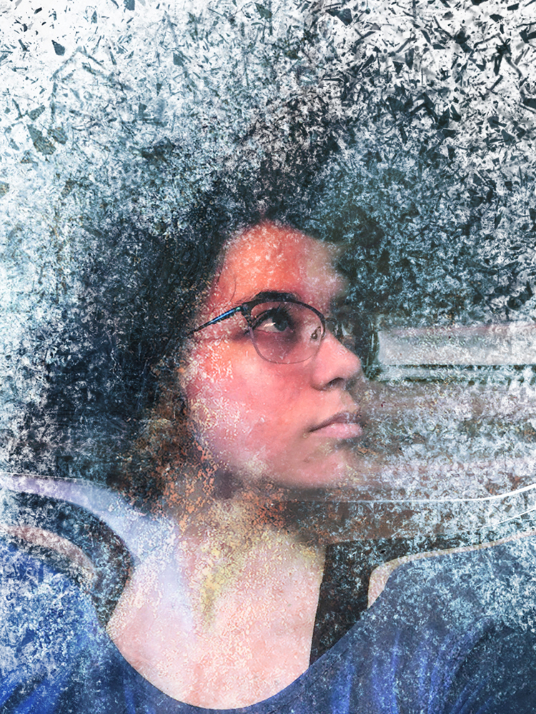

The following images were created in Adobe Photoshop CC 2015
This first image I decided to do something with a photo I took last year. and tried and make it artsy to look sort of like a watercolor painting.
Here I decided to follow this tutorial I saw to create a "double exposure" image. The tutorial provided a link to the stock photo used for viewers to follow along.
For this photo I was originally going for the "disintegration effect" from Marvel's Infinity War. However it didn't exactly turn out that way so I added an image overlay to make it more "artsy".